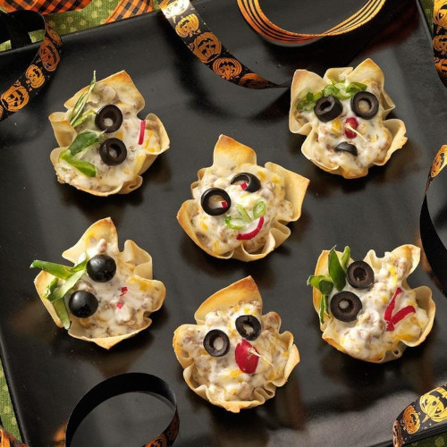

Goblin Bites
Home

Decription
I found this recipe while scavenging a human home for more ingredients. It looked suspicious but I decided to try it anyway.. and it was delishous. Maybe I should look more into human recipes.
Ingredients
- 32 wonton wrappers
- 1/2 pound ground beef
- 3 cups shredded colby-monterey jack cheese
- 1 cup mayonnaise
- 1/2 cup sour cream
- 1/2 cup whole milk
- 2 to 3 teaspoons ranch salad dressing mix
- Whatever you want to use for finishing touches such as olives, radishes, green onions and cucumbers
Directions
- Press wonton wrappers into muffin cups. Bake at 350° for 5 minutes or until lightly browned.
- Meanwhile, in a large skillet, cook sausage and beef over medium heat until no longer pink; drain. In a large bowl, combine the cheese, mayonnaise, sour cream, milk, salad dressing mix and meat mixture. Spoon 2 tablespoonfuls into each wonton cup.
- Bake at 350° for 5-7 minutes or until heated through. Add faces with olives, radish slices, onions and pieces of cucumber peel. Serve warm.